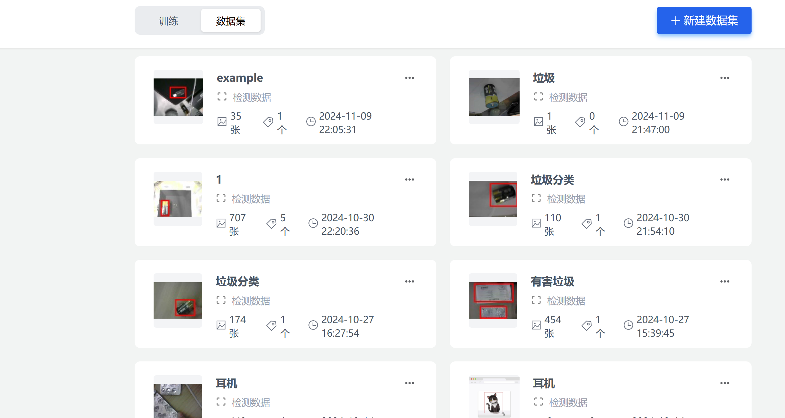
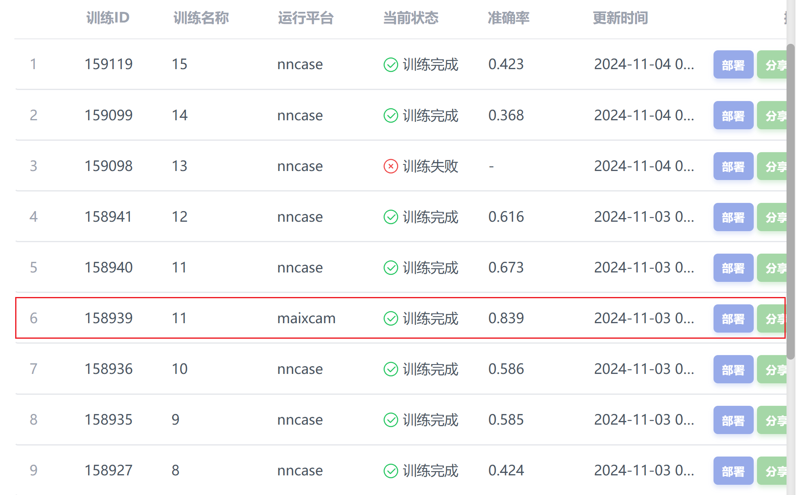

| 项目角色 | 队长 · 视觉开发 |
| 竞赛 | 第九届中国大学生工程实践与创新能力大赛 |
| 竞赛成果 | 校级铜奖 |
| 技术栈 | K210 边缘AI芯片, MaixHub, MaixPy IDE, 卷积神经网络 |
| 时间 | 2024.11 |
中国大学生工程实践与创新能力大赛（工创赛）要求在边缘设备上实现智能垃圾分类。本项目基于嘉楠K210边缘AI芯片，通过数据采集、云端训练、本地部署的完整流程，实现了四类垃圾的实时识别分类。
收集四种类型垃圾的数据集：
| 类别 | 垃圾类型 | 样本数量 |
|---|---|---|
| 0 | 可回收垃圾 | 200+ 张 |
| 1 | 有害垃圾 | 200+ 张 |
| 2 | 厨余垃圾 | 200+ 张 |
| 3 | 其他垃圾 | 200+ 张 |
采用K210摄像头模块进行多角度、多光照条件下的样本采集，使用标注工具进行bounding box标注。

将标注完成的数据集上传至MaixHub平台进行云端训练：
.kmodel模型文件
使用MaixPy IDE连接K210开发板进行调试：
import sensor, image, lcd, KPU
from machine import UART
# 初始化摄像头
sensor.reset()
sensor.set_pixformat(sensor.RGB565)
sensor.set_framesize(sensor.QVGA) # 320x240
sensor.run(1)
# 加载 kmodel 模型
task = KPU.load("/sd/model.kmodel")
anchor = (1.889, 2.525, 2.947, 3.941, 4.0, 5.366,
5.588, 6.750, 7.840, 9.606)
KPU.init_yolo2(task, 0.5, 0.3, 5, anchor)
# 初始化串口 (与主控通信)
uart = UART(UART.UART1, baudrate=115200)
lcd.init()
while True:
img = sensor.snapshot()
objects = KPU.run_yolo2(task, img)
if objects:
for obj in objects:
# 绘制检测框
img.draw_rectangle(obj.rect())
class_id = obj.classid()
confidence = obj.value()
class_names = ["可回收", "有害", "厨余", "其他"]
img.draw_string(obj.x(), obj.y(),
class_names[class_id], scale=2)
# 串口发送分类结果
uart.write(str(class_id) + '\n')
lcd.display(img)
K210识别出垃圾类别后，通过串口将分类编号（0–3）发送给STM32主控MCU。MCU接收分类数字后，驱动舵机旋转到对应角度，控制分类挡板将垃圾导入对应的收集桶：
| class\id | 垃圾类型 | 舵机角度 | 对应桶位 |
|---|---|---|---|
| 0 | 可回收垃圾 | 0° | 1号桶 |
| 1 | 有害垃圾 | 90° | 2号桶 |
| 2 | 厨余垃圾 | 180° | 3号桶 |
| 3 | 其他垃圾 | 270° | 4号桶 |
// 串口接收中断回调
void HAL_UART_RxCpltCallback(UART_HandleTypeDef *huart) {
if (huart == &huart1) {
uint8_t class_id = rx_buffer[0] - '0'; // ASCII转数字
if (class_id <= 3) {
// 四种垃圾对应四种舵机角度
uint16_t angles[4] = {0, 90, 180, 270};
Servo_SetAngle(angles[class_id]);
}
// 重新开启接收
HAL_UART_Receive_IT(&huart1, rx_buffer, 1);
}
}
// 舵机角度设置 (50Hz PWM, 0.5ms~2.5ms脉宽)
void Servo_SetAngle(uint16_t angle) {
// 将0~270度映射到500~2500us脉宽
uint16_t pulse = 500 + (uint32_t)angle * 2000 / 270;
__HAL_TIM_SET_COMPARE(&htim_servo, TIM_CHANNEL_1, pulse);
HAL_Delay(500); // 等待舵机到位
}
调试完成后将程序与模型烧录至TF卡，实现K210开机自启动独立运行，脱离PC调试环境。完整系统工作流程：K210视觉识别→串口发送class\id→MCU接收→舵机旋转到对应角度→垃圾分类投放。